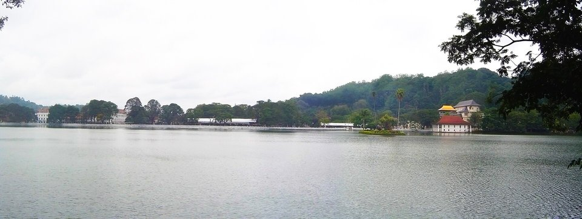

About Nuwara Eliya Town & Gregory Lake
Nestled at an elevation of 1,868 meters (6,128 feet) in the shadow of Mount Pidurutalagala, Nuwara Eliya is the premier mountain hill station of Sri Lanka. Established in the 19th century by British explorer Sir Samuel Baker as a retreat for European colonists escaping tropical coastal heat, it earned the affectionate moniker 'Little England' for its cool climate, manicured golf courses, red-brick Tudor-style cottages, and the iconic 1894 red-roofed Nuwara Eliya Post Office. At the heart of the town lies Gregory Lake, created in 1873 by Governor Sir William Gregory, today buzzing with jet skis, speedboats, swan pedalos, pony rides, and paved lakeside walking trails lined with colorful flower gardens.
Historical & Cultural Background
Discovered by British explorers in 1818; developed as a sanatorium and tea planting center by Sir Samuel Baker in 1846.
Natural & Geographical Characteristics
Highland montane valley characterized by mist, cool temperatures (10°C - 20°C), and surrounding tea hills.
What Makes It Special
1894 British Post Office, 18-hole Nuwara Eliya Golf Club (founded 1889), Gregory Lake watersports, and strawberry farms.
Why You Shouldn't Miss This Place
- Enjoy crisp, invigorating mountain air with temperatures occasionally dropping near 10°C
- Cruise across scenic Gregory Lake on a speedboat or family swan pedal-boat
- Send a vintage postcard from the world-famous red-brick 1894 colonial Post Office
- Savor fresh highland strawberries with whipped cream at local farms
Things to Do & Available Experiences
Insider Travel Tips
Photo Gallery & Visual Impressions
High-resolution imagery captured by travel photographers. Click to open full lightbox preview.



Nearby in Nuwara Eliya District

Horton Plains National Park & World's End
3 - 5 Hours (full circuit hike)
Hakgala Botanical Garden & Rose Terraces
2 - 3 Hours